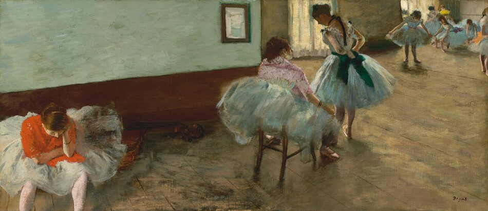
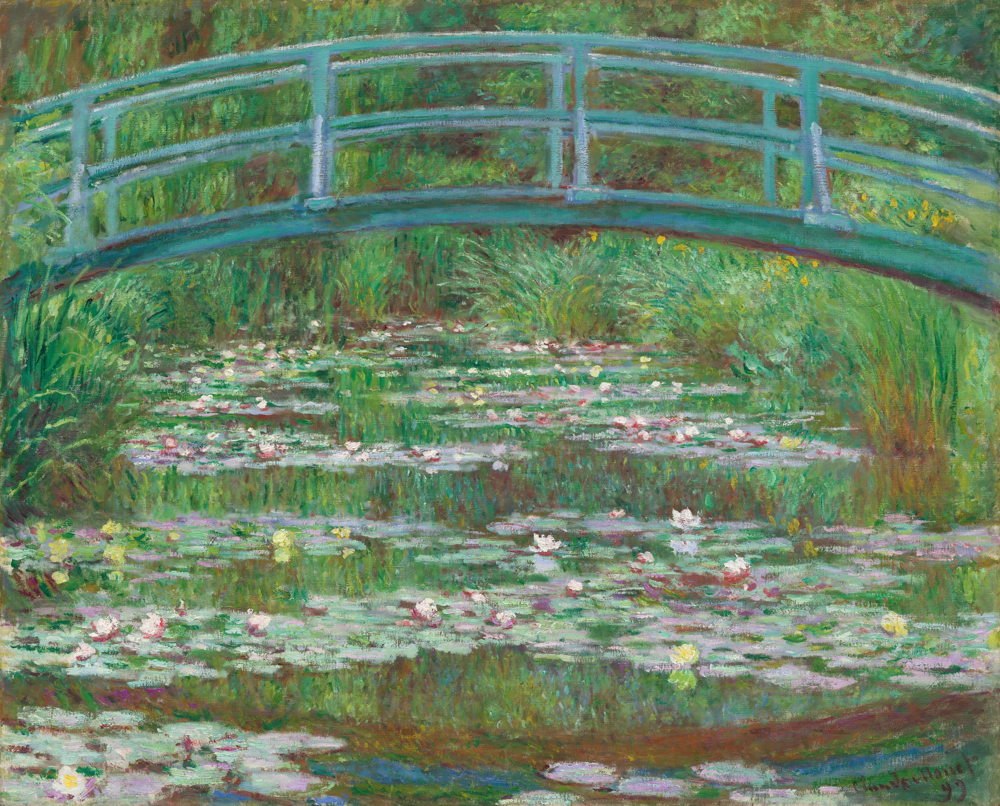
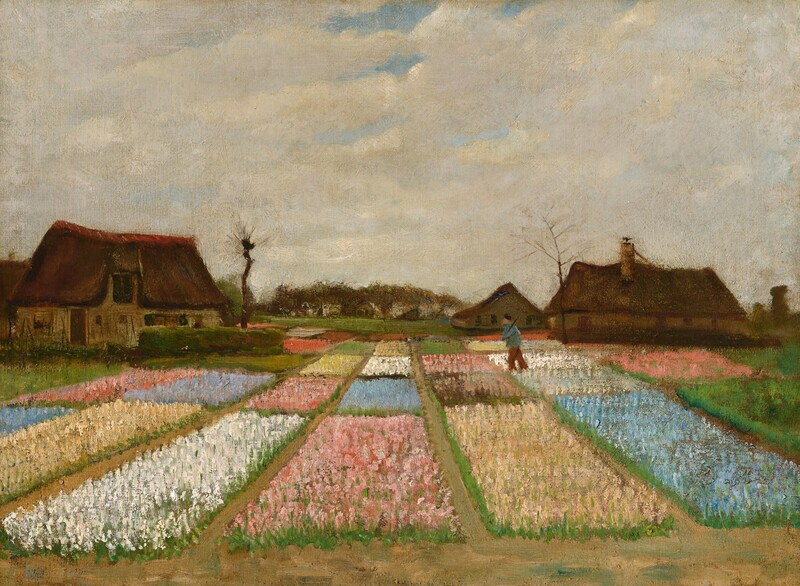

What Our Project
Is About
[Add the project's central research question, purpose, intended audience, and connection to DGT HUM 101 course concepts.]

[Add the project's central research question, purpose, intended audience, and connection to DGT HUM 101 course concepts.]


[Description about sources and methodology page]

[Description about about us page]